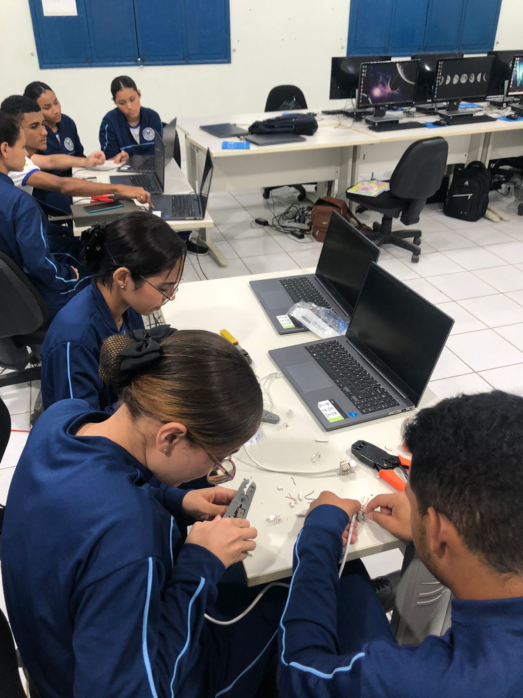

Técnico em Informática
Sobre o curso:
 O técnico em informática é o profissional responsável pela montagem e manutenção de computadores, detecção e correção de problemas nos computadores, instalação e configuração de redes e softwares, bem como o desenvolvimento de sistemas e websites. É uma área extremamente ampla e que oferece diversas oportunidades aos profissionais, desde a possibilidade de prestar serviços ou até mesmo atuar de forma autônoma.
O que se aprende neste curso?
Em um curso técnico de informática, os alunos geralmente aprendem uma variedade de habilidades e conhecimentos relacionados à área de tecnologia da informação. Alguns dos tópicos comuns incluem:
• Fundamentos de hardware e software: Aprendizado sobre componentes de computadores, sistemas operacionais e software aplicativo.
• Programação: Introdução à programação de computadores em linguagens como Java, Python, C++ ou outras, dependendo do currículo.
• Redes de computadores: Compreensão de conceitos de rede, configuração e administração de redes locais.
• Sistemas operacionais: Uso e administração de sistemas operacionais, como Windows, Linux ou macOS.
• Banco de dados: Conhecimento sobre bancos de dados, modelagem de dados e linguagem SQL.
• Segurança da informação: Conscientização sobre práticas de segurança cibernética e proteção de dados.
• Manutenção de hardware: Habilidades para diagnosticar e resolver problemas de hardware de computadores.
• Desenvolvimento web: Introdução ao desenvolvimento de sites e aplicações web.
• Suporte técnico: Como prestar suporte técnico a usuários de computadores e resolver problemas comuns.
• Gerenciamento de projetos de TI: Noções básicas de planejamento e execução de projetos de tecnologia da informação.
Lembrando que o conteúdo exato pode variar de acordo com a instituição de ensino e o programa específico do curso técnico de informática.